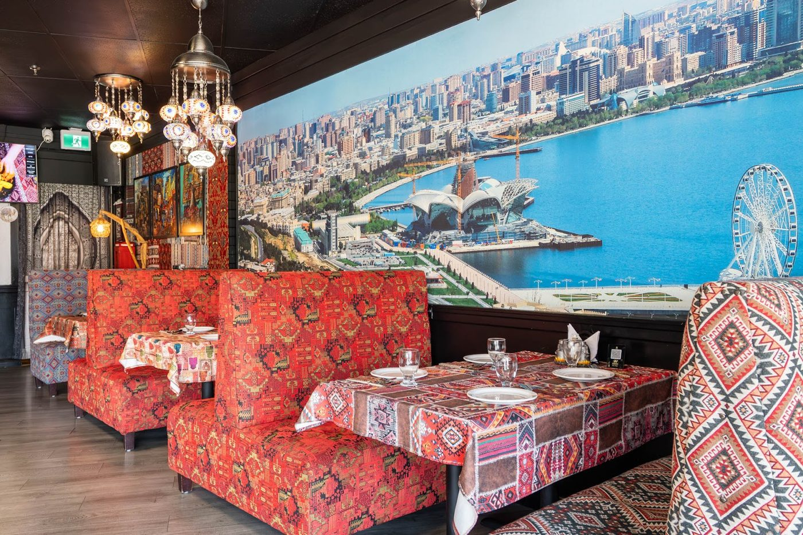
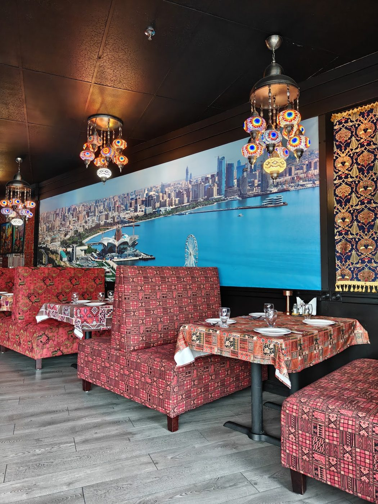

Concord · Vaughan
Azerbaijani cooking at Steeles and Keele
Karvan Restaurant is at 2180 Steeles Ave W, Unit 6, on the first floor of Concordia Business Square. Google lists it as an Azerbaijani restaurant. Reviewers write about kebabs, pilaf, khinkali, khachapuri and clove tea, and about a dining room with live music on Saturday evenings.
- Azerbaijani restaurant
- 4.7 from 600 Google reviews
- Steeles and Keele
- Vaughan
What to know before you go
Kebabs, pilaf and tea
Google reviewers name chicken and lamb kebab, pulav (pilaf), khinkali, khachapuri, piti (a lamb stew cooked in a clay pot), and tea brewed with cloves. Those are customer descriptions from the Google listing, not a menu posted on this page.
Saturday evening music
In a reply to Winston ***’s Google review (a month ago, read Nov 25, 2026), the restaurant wrote: “We have live music every Saturday evening starting 6pm.” Winston’s review describes a singer and dancing in the dining room that evening.
Khash season
A “From the owner” post on the Google listing, dated Nov 1, 2026, says khash season is open at Karvan Restaurant in Vaughan, and describes khash as a traditional Azerbaijani gathering dish served with its usual accompaniments. Call if you want to ask whether it is being served when you plan to visit.
These details come from Karvan Restaurant’s public Google listing, its Nov 1, 2026 owner post, the owner’s review replies, and customer reviews, all read Nov 25, 2026. This page does not list prices.

A dining room in Concordia Business Square
Karvan is in Unit 6, on the first floor of Concordia Business Square at 2180 Steeles Ave W in Vaughan. Google does not list a website of the restaurant’s own. Some older directories still publish karvanrestaurant.ca; that address no longer belongs to Karvan and is not linked here.
The surest way to reach the restaurant is to call or come by during the hours above. Their Facebook page is also linked in the visit section.
What customers say
4.7 ★ from 600 Google reviews (checked Nov 25, 2026). Quotes are word for word. Each one says where it was read: on the Google listing itself, or on a public page that copies reviews.
★★★★★
We randomly discovered Karvan while driving around the area with friends and looking for somewhere to eat. Honestly, we didn’t even realize it was an Azerbaijani restaurant until we looked at the menu—and what a wonderful discovery it turned out to be!
Our server was incredibly kind and she took the time to explain some of the traditional dishes on the menu. We also learned that there would be live music that evening, which made the experience even more exciting.
We ordered the Piti, a traditional lamb stew cooked in a clay vessel, along with the chicken shish kebab and Adjarian Khachapuri. Everything tasted amazing! The Piti was hearty and comforting, while the chicken was incredibly juicy and delicious, especially with the tomato sauce.
We also finished off with a pot of tea.Then the live performance began, and we instantly felt immersed in Azerbaijani culture. The singer was so warm, energetic, and entertaining. He even got us out of our chairs and dancing! Before we knew it, we were dancing with another customer from a nearby table. We absolutely loved his singing and the energy he brought to the restaurant.
Although we didn’t understand the lyrics, we could feel the passion and beauty behind the music and gained a real appreciation for Azerbaijani tradition and culture.
Thank you, Karvan, for making our dinner such a special and memorable experience. The food, music, hospitality, and entertainment were all fantastic. We had such a great time and would definitely come back!
★★★★★
Karvan brought authentic Azerbaijani flavors to the city of Vaughn — the chicken and lamb kebab were perfectly spiced and clearly made with fresh ingredients. the pulav was flavorful, and the tea brewed with cloves was such a nice, homey touch at the end of the meal.
The staff were warm and attentive and the atmosphere felt inviting — great for both a casual dinner and something a bit more special. You can tell the owner takes real pride in bringing genuine Azerbaijani cuisine to the area.
Highly recommend if you want to try something different from the usual Toronto-area dining scene.
★★★★★
It was a family visit with kids and everyone was happy with what they selected! Chicken kebab was super juicy and flavorful (kids stole half of my chicken and rice and they loved it), khinkali were a blast - spiced meat and not too heavy dough. Also we tried lamb and khachapuri. Very cozy atmosphere and great service. Will come back for sure!
★★★★★
I’ve been coming to this restaurant for years, and I can honestly say that it has always been one of my favourite places to eat. The food is consistently delicious, the portions are generous, and the quality never disappoints. Each visit brings the comforting experience of a satisfying meal served in a welcoming setting, and you can feel the care and effort that goes into making every guest feel welcome, even when the restaurant is busy.
One of the things I appreciate most is the owners themselves. They are a husband-and-wife team, and they always make a point of coming out to greet their guests. Their warm welcome and personal attention make a real difference. You never feel like just another customer here — they make sure you feel seen and appreciated, and you never leave feeling that you didn’t receive their attention or hospitality.
The restaurant is often busy, and honestly, that speaks for itself. There is a lively, welcoming atmosphere, with the steady energy of people enjoying their meals and returning to a place they trust. People keep coming back because the food is great, the portions are generous, the atmosphere feels inviting, and the owners truly care about their customers.
After all these years as a customer, I have nothing but positive things to say. If you’re looking for a place with delicious food, satisfying portions, a warm atmosphere, and owners who genuinely care about their guests, this is definitely the place.
Highly recommend — and I’ll continue coming back! ❤️
Inside the dining room
Real photos from the restaurant’s public Google listing, downloaded Nov 25, 2026. Menu photos that show prices are not included. Tap to enlarge.
Visit the restaurant
2180 Steeles Ave W, Unit 6
Vaughan, ON L4K 2Z5
Floor 1 · Concordia Business Square
Facebook
| Monday | 11 a.m.–8 p.m. |
|---|---|
| Tuesday | 11 a.m.–9:30 p.m. |
| Wednesday | 11 a.m.–9:30 p.m. |
| Thursday | 11 a.m.–9:30 p.m. |
| Friday | 11 a.m.–10 p.m. |
| Saturday | 12:30–10 p.m. |
| Sunday | 12:30–10 p.m. |
Hours are from the Google listing, checked Nov 25, 2026: Monday 11 a.m.–8 p.m.; Tuesday–Thursday 11 a.m.–9:30 p.m.; Friday 11 a.m.–10 p.m.; Saturday and Sunday 12:30–10 p.m. Restaurantji, fetched the same day, lists Monday until 9:30 p.m. rather than 8. Zabihah and CanadaResto list different hours, including a closed Thursday. This page uses Google. If you are arriving near opening or closing, please call first.